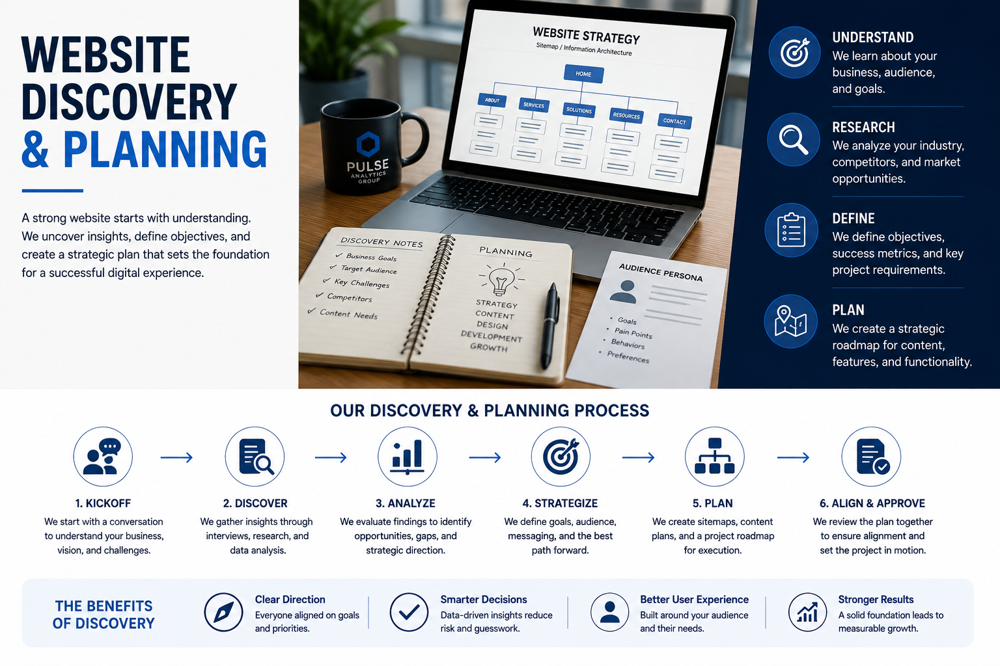
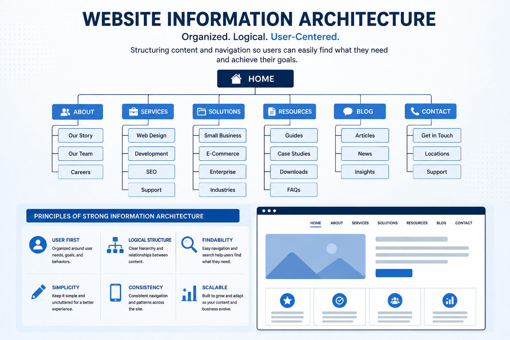
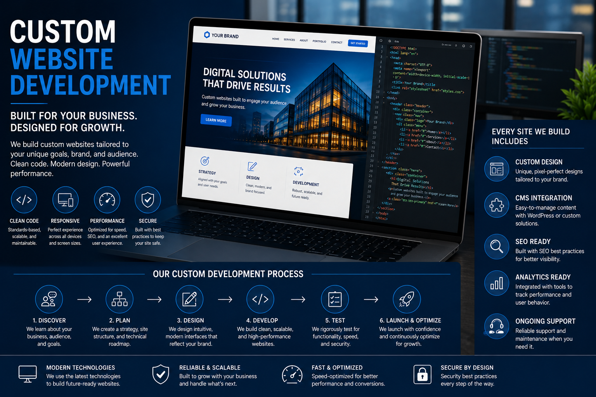
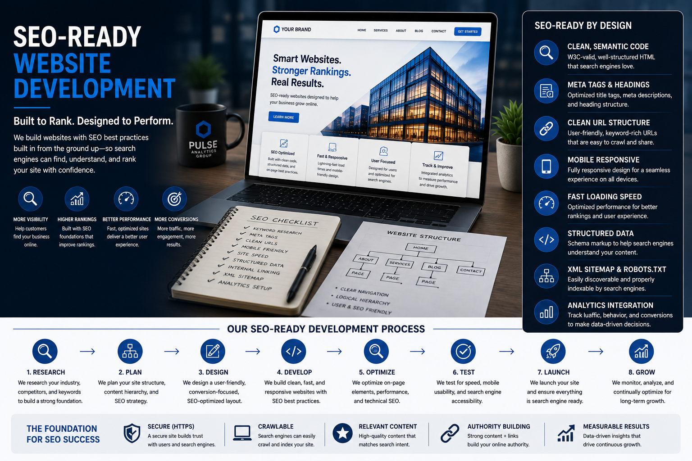
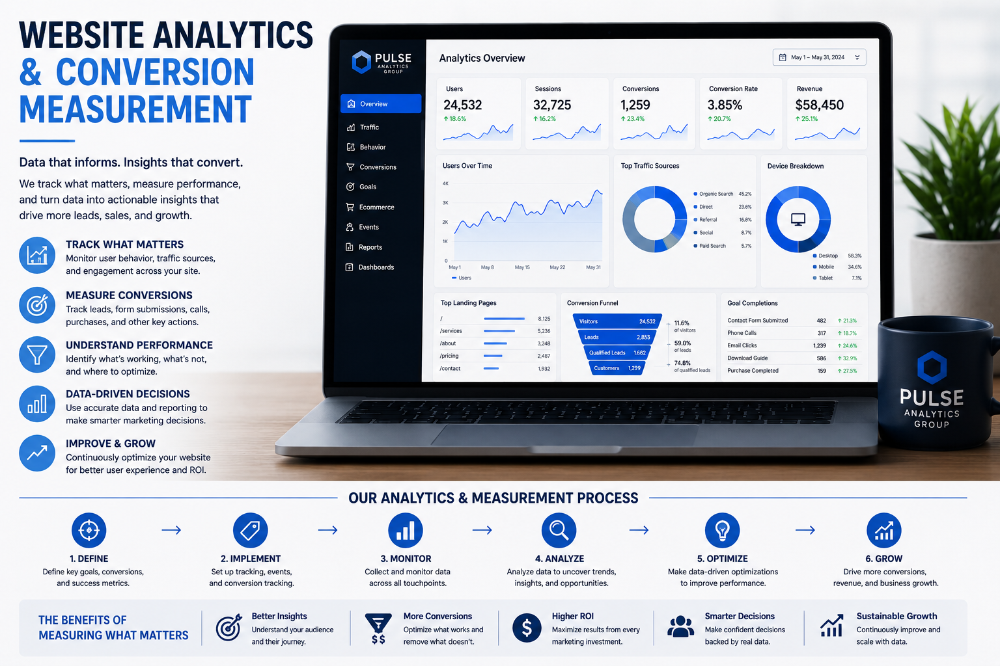
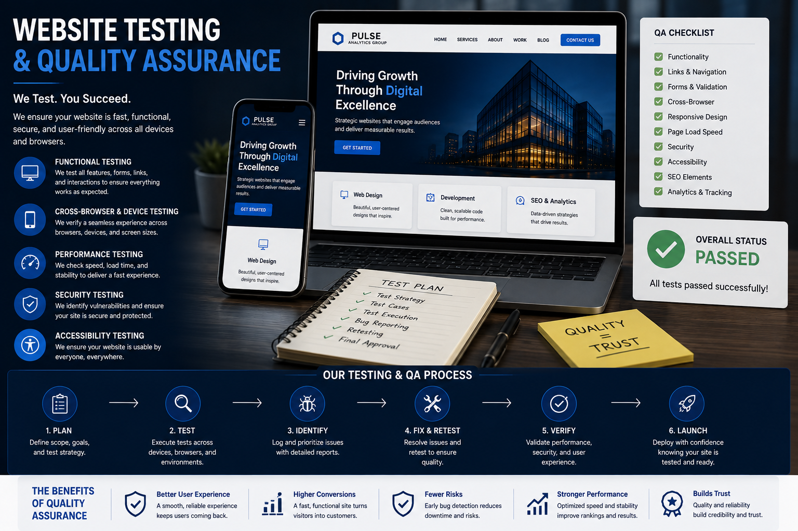
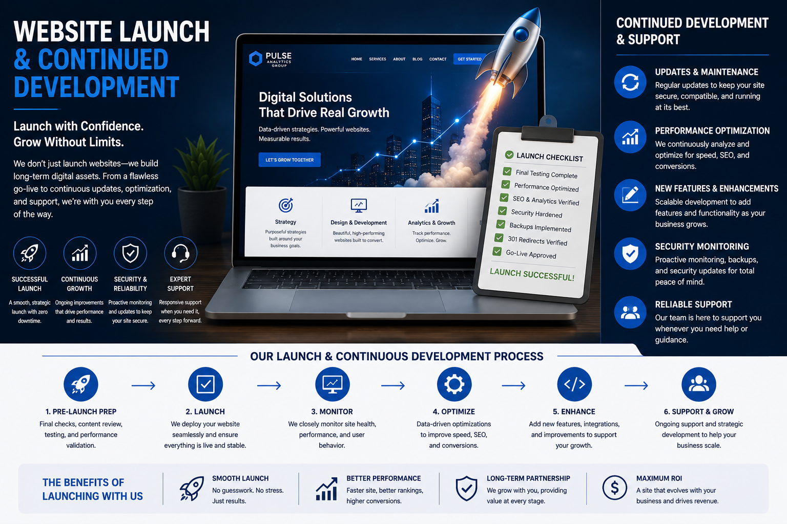

Your Website Should Be Built Around Your Business
A professional website is more than a digital brochure. It is the foundation of your online presence, the destination for your marketing, and often the first meaningful interaction a potential customer has with your business.
Pulse Analytics Group designs and develops websites around business objectives, customer behavior, usability, performance, search visibility, and long-term growth.

A Website Is a Business System, Not Just a Digital Brochure
A modern business website can serve as the public face of a brand, a source of information, a search asset, a marketing destination, a conversion environment, and a measurement platform. The quality of those functions depends on decisions made long before launch.
Performance Is Part of the User Experience
A website can look excellent and still provide a poor experience if important content loads slowly, interactions feel unresponsive, or the layout shifts while a visitor is trying to use it. Google's Core Web Vitals focus on three measurable aspects of real-world experience: loading performance, responsiveness, and visual stability.
We consider performance during development rather than treating it as a final-stage score to chase. Image handling, page structure, CSS and JavaScript, responsive assets, third-party resources, hosting behavior, and other implementation decisions can all affect the experience visitors receive.
Source: Google web.dev — Web Vitals
From Visitor to Action
A website should make it clear what a visitor can do next. That does not mean every page should aggressively sell. It means the architecture, content, calls to action, and navigation should support the decision the visitor is actually trying to make.
Depending on the business, that next step might be a phone call, inquiry, appointment, purchase, quote request, download, signup, or another meaningful action.
A Professional Website Should Be Usable by More People
Accessibility is part of responsible website development. Semantic structure, meaningful text alternatives, keyboard accessibility, sufficient contrast, visible focus states, properly labeled forms, logical heading structure, and clear navigation can make a website easier to use for people with different abilities and different ways of interacting with the web.
Reference: W3C — Web Content Accessibility Guidelines (WCAG) 2.2
The Technology Should Serve the Business
We do not believe every organization should receive the same technical solution. A small service business, an e-commerce operation, a growing organization, and a company requiring custom functionality may have very different requirements.
Our development approach can incorporate custom front-end development, content management systems, e-commerce platforms, website builders, third-party integrations, analytics systems, forms, scheduling, APIs, and other technologies according to project requirements.
Your Website Should Work With the Rest of Your Marketing
The website is often the central destination connecting multiple marketing channels. Search, paid advertising, social media, branding, content, email, lead generation, and analytics can all influence the customer journey. Building the website with those relationships in mind creates a stronger foundation for growth.
Build for People and Machines
Search engines need to understand what a website contains, how its pages relate to one another, and what individual elements mean. Semantic HTML, descriptive metadata, logical heading structure, internal linking, canonical signals, XML sitemaps, and appropriate structured data can help establish that meaning.
JSON-LD provides a standardized way to communicate structured information about page content. Google recommends JSON-LD for structured data implementations and provides documentation for testing and validating markup.
Explore SEO ServicesReference: Google Search Central — Structured Data
Launching a Website Means More Than Making It Look Finished
A production website needs more than attractive pages. Forms, links, navigation, third-party integrations, responsive behavior, dependencies, redirects, analytics, and other technical components all need to work together.
Your Website Should Become More Valuable Over Time
A website can accumulate content, search visibility, backlinks, customer knowledge, conversion history, analytics data, brand recognition, and technical improvements over its lifetime. That makes the website a long-term business asset rather than something that should simply be replaced every few years.
Sometimes the Right Answer Is to Improve What You Already Have
Not every business needs to start over. An existing website may contain valuable content, search equity, established links, useful analytics history, or functional components worth preserving.
We can evaluate the current site across design, UX, performance, accessibility, technical structure, SEO, content, conversion paths, and measurement before recommending a direction.

We Don't Start With a Template. We Start With Your Business.
The most important decisions in a website project happen before the first line of code is written. What does the business need the website to accomplish? Who is it trying to reach? What actions should visitors take? What information do they need? How should the website support the broader marketing strategy?
Those questions establish the foundation for the architecture, content, user experience, visual design, and technical implementation that follow.
Our process is deliberately structured around those decisions so the finished website has a purpose beyond simply looking professional.
Your Business Knowledge. Our Technical Expertise.
We believe the strongest websites are built through collaboration. You know your business, customers, industry, and goals. We bring the technical, strategic, design, and digital marketing expertise required to translate that knowledge into an effective website.
You are not simply handing us a project and waiting for a finished product. We work with you throughout the process, creating opportunities for review, discussion, refinement, and informed decision-making.
Before We Build, We Need to Understand
Every website project begins with discovery. We need to understand your organization, your customers, your competitive environment, your existing digital presence, and what you need the website to accomplish.
Discovery allows us to identify requirements, opportunities, potential constraints, and areas where the website can contribute to the broader business strategy.


Structure the Website Before Styling the Website
A visually impressive website can still fail if visitors cannot find what they need. Information architecture establishes how the website's content, pages, navigation, and functionality fit together.
We organize the website around the way users need to move through it rather than simply mirroring an internal organizational chart.
Design the Experience, Not Just the Appearance
User experience determines how easily visitors understand the website, navigate its content, find information, and complete important actions.
User interface design then translates that experience into a visual system that communicates the brand clearly and consistently across the site.
We consider hierarchy, spacing, typography, interaction, accessibility, responsiveness, calls to action, and visual consistency throughout the design process.


Translate the Strategy and Design Into a Functional Website
Development is where architecture, design, content, and functionality become an actual working website.
Our development approach emphasizes clean structure, responsive behavior, maintainability, performance, accessibility, and integration with the systems the business depends on.
Depending on the project, we work with technologies and platforms appropriate to the client's requirements rather than forcing every business into the same technical solution.
Build the Website With Search Visibility in Mind
SEO should not be something added to a website after development is complete. Important technical and structural decisions can affect how search engines discover, interpret, and index a website.
We consider search visibility during architecture, development, content organization, page structure, performance, and internal linking so the website has a stronger foundation for future SEO work.


A Website Should Be Measurable
Once a website launches, you need to understand how people are using it. Which pages attract attention? Where are visitors leaving? Which actions lead to inquiries, purchases, calls, or other meaningful conversions?
We build measurement considerations into the website strategy so analytics and conversion tracking can support informed decisions after launch.
A Website Is Not Finished When It Looks Finished
Before launch, the website needs to be evaluated across the devices, browsers, interactions, and workflows that matter to its users.
We review functionality, responsive behavior, navigation, forms, links, visual consistency, performance considerations, and other critical elements before the website is released.


Launch Is a Milestone, Not the End of the Project
A website should evolve as the business evolves. New services, new customers, new campaigns, changing technology, and performance data can all create reasons to improve the site after launch.
We can continue working with clients after launch to maintain, improve, expand, and optimize the website as their needs change.
You Are Part of the Development Process
We do not believe clients should disappear into the background while a website is being built. Your feedback is essential because you understand the business from a perspective no outside developer can completely replicate.
Our role is to bring structure to that knowledge, ask the right questions, make informed recommendations, explain technical decisions clearly, and turn the agreed strategy into a functional digital experience.
Throughout the Project, We Focus On
- Understanding your business before making technical decisions
- Establishing clear project objectives and requirements
- Maintaining communication throughout development
- Presenting work for review and refinement
- Explaining technical decisions in understandable terms
- Incorporating meaningful client feedback
- Keeping the project aligned with the agreed objectives
What You Can Expect From Us
- Strategic recommendations
- Technical expertise
- Direct communication
- Structured development
- Transparent decision-making
- Attention to detail
- A website built for your business rather than a generic template
Development and Marketing Should Work Together
A website does not exist in isolation. It supports search engine optimization, paid advertising, social media, analytics, lead generation, branding, and the overall customer journey.
Because Pulse Analytics Group operates across those disciplines, we can approach website development with a broader understanding of how the site will function within the client's digital marketing ecosystem.
Website Development Is a Strong Fit For
- Businesses that need a professional digital presence
- Companies replacing an outdated website
- Organizations preparing for growth
- Businesses launching a new brand or service
- Companies that need a website integrated with marketing
- Businesses that have outgrown a basic template website
The Result
- A website aligned with your business objectives
- A clearer customer experience
- A stronger foundation for SEO
- A platform for digital marketing campaigns
- Better opportunities for measurement and optimization
- A website capable of evolving with your business
A Website Is Built, Measured, Improved, and Expanded
You're Not Hiring a Designer in Isolation
Pulse Analytics approaches website development from within a broader digital marketing discipline. Our work spans SEO, analytics, paid advertising, social media, branding, AI-assisted marketing, and business growth. That perspective changes how we think about the website itself.
The website has to work with the marketing around it. It has to communicate the brand, support search visibility, provide a clear customer experience, create measurable actions, and give the business a foundation it can continue building on.
Your Website Deserves More Than a Template
If your website is going to represent your business, support your marketing, and serve your customers, it should be built with the same level of intention you bring to the business itself.
Tell us what you are trying to accomplish. We'll work with you to understand the problem, define the requirements, develop the strategy, and build the solution.